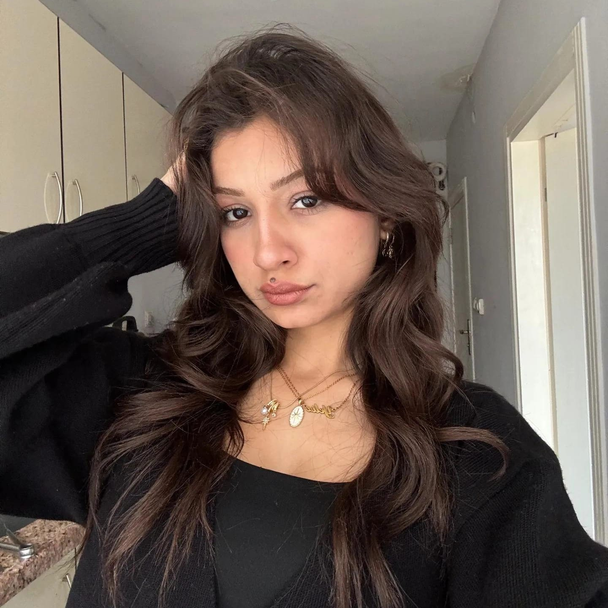

AraştırmaPortfolyo
Coğrafi Araştırma Raporları
İncelenen konu, araştırmanın amacı, kullanılan yöntem ve ulaşılan sonuçları kısa ve anlaşılır biçimde tanıtmak için.
Coğrafya Öğrencisi Öğretmen Adayı

Merhaba, ben Yeliz Kavukcu! Bilecik Şeyh Edebali Üniversitesi Coğrafya Bölümü 4. sınıf öğrencisiyim. Giresun'da doğdum. Doğayı, insan ve mekân arasındaki ilişkileri keşfetmeyi, araştırmayı ve öğrendiklerimi paylaşmayı seviyorum.
Coğrafyaya olan ilgimi akademik çalışmalarım ve saha araştırmalarımla geliştiriyorum. Gelecekte coğrafi bilgiyi öğrencilerle buluşturan, çevresine duyarlı ve merak uyandıran bir öğretmen olmayı hedefliyorum.
Bilecik Şeyh Edebali Üniversitesi
Öğretmen adayı
Sahada öğrenme
Coğrafya Bölümü · 4. sınıf
Lisans eğitimim boyunca doğal sistemleri, beşerî çevreyi ve insan-mekân etkileşimini farklı coğrafi yaklaşımlarla ele alıyorum. Öğretmenlik hedefim doğrultusunda alan bilgimi, araştırma ve anlatım becerilerimle destekliyorum.
Akademik çalışmalarını, raporlarını ve sunumlarını burada bir portfolyo olarak toplayabilirsin. Aşağıdaki kartlar yeni çalışmalarınla güncellenmek üzere hazırlanmıştır.
İncelenen konu, araştırmanın amacı, kullanılan yöntem ve ulaşılan sonuçları kısa ve anlaşılır biçimde tanıtmak için.
Haritalar ve mekânsal veriler üzerinden bir bölgenin doğal veya beşerî özelliklerini değerlendiren çalışmalar.
Derslerde hazırlanan sunumların konusu, temel kavramları ve öğrenme çıktıları hakkında bilgi paylaşımı.
Tez konusu, araştırma sorusu, yöntem ve bulgular kesinleştiğinde bu alana eklenebilir.
Katıldığın gezileri ve saha çalışmalarını; konum, tarih, gözlem notları ve fotoğraflarla belgeleyebilirsin.
Örnek içerik alanları: çalışma alanı, gözlem amacı, doğal ve beşerî çevre özellikleri, dikkat çeken bulgular.
Fotoğraflarını eklediğinde bu alanı gerçek görsellerle güncelleyebilirsin. Şimdilik görsel kategorileri tasarım örneği olarak yer alıyor.
Akademik çalışmalar, coğrafya eğitimi ve iş birlikleri için benimle iletişime geçebilirsin.